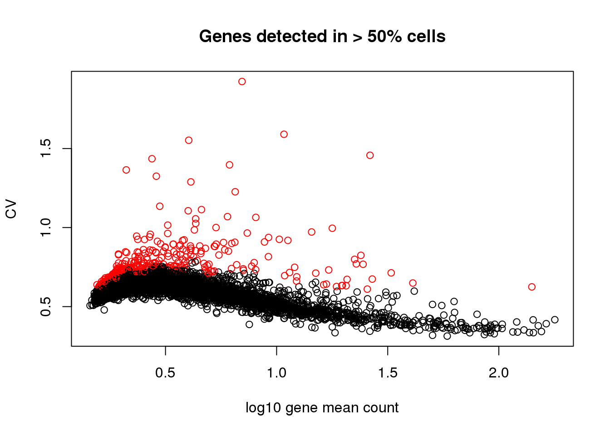

Last updated: 2018-02-22
Code version: eb1a233
Select genes annotated to cell cycle in the GO annotation (GO:0007049).
Select genes documented in CycleBase - previously found to relate to cell cycle in microarray studies.
Select genes whose expression variability is above certain threshold.
This document generated several RDS for later use:
*genes.cyclebase.rds: human cell cycle genes based on cycleBase
*genes.go.rds: human cell cycle genes associated with GO:0007049
*genes.variable.rds: genes in the current study with detection rate > 50 and dispersion z-score > 1.5 across expression mean bins (this may need to be changed later…).
*genes.cycle.rds: combined cell cycle annotated genes from CycleBase and GO.
*genes.cycle.detect.rds: combined cell cycle annotated genes from CycleBase and GO with detection rate > 50% in the current study.
*genes.variable.cycle.rds: genes identified as variable in the current study that are also in the current cell cycle annotated set.
Packages
library(biomaRt)
library(Biobase)Load data
df <- readRDS(file="../data/eset-filtered.rds")
pdata <- pData(df)
fdata <- fData(df)
# select endogeneous genes
counts <- exprs(df)[grep("ENSG", rownames(df)), ]ensembl = useMart("ensembl",dataset="hsapiens_gene_ensembl")
#gets gene symbol, transcript_id and go_id for all genes annotated with GO:0007507
genes.go <- getBM(attributes=c('hgnc_symbol', 'ensembl_gene_id', 'go_id'),
filters = 'go', values = 'GO:0007049', mart = ensembl)Download human periodic genes.
genes.cyclebase <- read.table("../data/cellcycle-genes-previous-studies/human_periodic.tsv",
header = TRUE)Across individuals, I computed gene mean and coefficient of variation including cells that are detected as expressed for each gene.
gene.means <- apply(counts, 1, function(x) {
ii_pos <- x >0
mean(x[ii_pos])
})
gene.cvs <- apply(counts, 1, function(x) {
ii_pos <- x >0
mn <- mean(x[ii_pos])
sd <- sd(x[ii_pos])
sd/mn
})
gene.drops <- rowMeans(counts>0)Relationship between gene mean and CV is the same as we observed before in the batch paper. The genes with low average expression across cells are those that have high dropout rate.
par(mfrow=c(1,2))
plot(x=log10(gene.means), y = gene.cvs,
xlab = "log10 gene mean count", ylab = "CV")
abline(v=.25, col = "red")
plot(x=gene.drops, y = log10(gene.means),
xlab = "Proportion of samples detected (count 0)",
ylab = "log10 gene mean count")
abline(v=.5, col = "blue")
abline(h=.25, col = "red")
Two steps here for choosing variable genes:
I arbitrary decided on a cutoff for gene mean based on the relationship between CV and log10 gene count. The idea was to filter the genes among which dispersion increases with gene mean (approximately when detection rate 50% or lower).
Scan across gene expression bins, identify the ones with high variability in each bin.
gene.detect <- rownames(counts)[which(gene.drops > .5)]
gene.means.detect <- gene.means[which(gene.drops > .5)]
gene.cvs.detect <- gene.cvs[which(gene.drops > .5)]
bins <- cut(gene.means.detect,
breaks = quantile(gene.means.detect, prob = seq(0,1, .05)),
include.lowest = TRUE)
bins <- as.numeric(bins)
genes.variable <- do.call(c, lapply(1:length(bins), function(i) {
ii_bin <- bins == i
cv.z <- scale(gene.cvs.detect[ii_bin])
rownames(cv.z)[which(cv.z>1.5)]
}) )
plot(x=log10(gene.means.detect),
y=gene.cvs.detect,
xlab = "log10 gene mean count",
ylab = "CV", main = "Genes detected in > 50% cells",
col = 1+as.numeric(names(gene.means.detect) %in% genes.variable))saveRDS(as.character(genes.cyclebase$gene),
file = "../output/seqdata-select-cellcyclegenes.Rmd/genes.cyclebase.rds")
saveRDS(as.character(genes.go$ensembl_gene_id),
file = "../output/seqdata-select-cellcyclegenes.Rmd/genes.go.rds")
saveRDS(genes.variable,
file = "../output/seqdata-select-cellcyclegenes.Rmd/genes.variable.rds")
genes.cycle <- unique(c(as.character(genes.cyclebase$gene),
as.character(genes.go$ensembl_gene_id)))
saveRDS(genes.cycle,
file = "../output/seqdata-select-cellcyclegenes.Rmd/genes.cycle.rds")
genes.cycle.detect <- genes.cycle[which(genes.cycle %in% names(gene.means.detect))]
saveRDS(genes.cycle.detect,
file = "../output/seqdata-select-cellcyclegenes.Rmd/genes.cycle.detect.rds")
genes.variable.cycle <- genes.variable[which(genes.variable %in% genes.cycle)]
saveRDS(genes.variable.cycle,
file = "../output/seqdata-select-cellcyclegenes.Rmd/genes.cycle.variable.rds")R version 3.4.1 (2017-06-30)
Platform: x86_64-redhat-linux-gnu (64-bit)
Running under: Scientific Linux 7.2 (Nitrogen)
Matrix products: default
BLAS/LAPACK: /usr/lib64/R/lib/libRblas.so
locale:
[1] LC_CTYPE=en_US.UTF-8 LC_NUMERIC=C
[3] LC_TIME=en_US.UTF-8 LC_COLLATE=en_US.UTF-8
[5] LC_MONETARY=en_US.UTF-8 LC_MESSAGES=en_US.UTF-8
[7] LC_PAPER=en_US.UTF-8 LC_NAME=C
[9] LC_ADDRESS=C LC_TELEPHONE=C
[11] LC_MEASUREMENT=en_US.UTF-8 LC_IDENTIFICATION=C
attached base packages:
[1] parallel stats graphics grDevices utils datasets methods
[8] base
other attached packages:
[1] Biobase_2.38.0 BiocGenerics_0.24.0 biomaRt_2.34.2
loaded via a namespace (and not attached):
[1] Rcpp_0.12.15 AnnotationDbi_1.40.0 knitr_1.20
[4] magrittr_1.5 progress_1.1.2 IRanges_2.12.0
[7] bit_1.1-12 R6_2.2.2 rlang_0.2.0
[10] httr_1.3.1 stringr_1.3.0 blob_1.1.0
[13] tools_3.4.1 DBI_0.7 git2r_0.21.0
[16] htmltools_0.3.6 assertthat_0.2.0 yaml_2.1.16
[19] bit64_0.9-7 rprojroot_1.3-2 digest_0.6.15
[22] tibble_1.4.2 S4Vectors_0.16.0 bitops_1.0-6
[25] curl_3.1 RCurl_1.95-4.10 memoise_1.1.0
[28] evaluate_0.10.1 RSQLite_2.0 rmarkdown_1.8
[31] stringi_1.1.6 pillar_1.1.0 compiler_3.4.1
[34] prettyunits_1.0.2 backports_1.1.2 stats4_3.4.1
[37] XML_3.98-1.10 This R Markdown site was created with workflowr